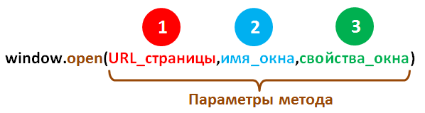
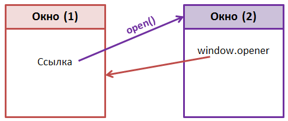

В браузерах роль глобального объекта играет объект Window. К нему нельзя обратиться напрямую, однако он имеет свойство window, ссылающееся на сам объект, которое можно использовать вместо ключевого слова this для ссылки на глобальный объект. Все переменные и функции, объявленные глобально, становятся его свойствами и методами:
var num = 15;
function sayNum() {
alert(this.num);}
alert(window.num); // 15
sayNum(); // 15
window.sayNum(); // 15
Несмотря на то что глобальные переменные становятся свойствами объекта Window, между ними и объявленными свойствами непосредственно для объекта Window есть небольшое различие. Глобальные переменные нельзя удалить с помощью оператора delete, а свойства, определённые непосредственно для объекта Window, можно:
var num = 10;
window.num2 = 15;
delete window.num; // false
delete window.num2; // true
alert(window.num); // 10
alert(window.num2); // undefined
Таким образом, добавление свойства непосредственно для объекта Window равносильно созданию глобальной переменной без ключевого слова var.
У свойств, добавленных в JavaScript к объекту Window с помощью ключевого слова var, атрибут [[Configurable]] имеет значение false, поэтому их нельзя удалить, используя оператор delete.
Он предназначен для открытия нового окна (вкладки) в браузере и имеет следующий синтаксис:
Параметры метода:
Рассмотрим следующий примеры:
window.open("","","width=250,height=250");
window.open("https://www.google.com.ua", "_self");
window.open("https://www.google.com.ua", "_blank", "top=100, left=100, width=400, height=500, scrollbars=yes, resizable=yes");
Он предназначен для закрытия окна. Данный метод не имеет параметров. Он обычно используется для закрытия окон созданных методом open(). В противном случае, когда Вы попытаетесь закрыть окно (вкладку), открытое самим пользователем (не из JavaScript), то браузер из-за соображений безопасности запросит у пользователя подтверждение на выполнение этого действия.
Например, cоздадим кнопки для открытия и закрытия окна с именем myWindow:
var myWindow;
function myWindowOpen() {
myWindow = window.open("https://www.google.com.ua", "myWindow", "width=400, height=400");}
function myWindowClose() {
if (myWindow) {
myWindow.close();
myWindow = null;}}
Он предназначен для печати содержимого окна. Данный метод не имеет параметров. Пример:
function myPrint() {
window.print();}
| Метод | Описание |
|---|---|
| alert() | Выводит модальное диалоговое окно с сообщением и кнопкой OK. |
| atob() | Декодирует строку данных, которая была закодирована с использованием кодировки base-64. |
| btoa() | Создает строку ASCII в кодировке base-64 из строки бинарных данных. |
| clearInterval() | Отменяет выполнение действий, заданных с помощью метода setInterval(). |
| clearTimeout() | Отменяет выполнение действий, заданных с помощью метода setTimeout(). |
| close() | Закрывает окно, которое было открыто с помощью метода window.open(). |
| confirm() | Отображает модальное диалоговое окно, содержащее сообщение и кнопки ОК и Отмена. |
| focus() | Устанавливает фокус на текущее окно. |
| moveBy() | Перемещает текущее окно на заданную величину. |
| moveTo() | Перемещает окно в соответствии с указанными координатами. |
| open() | Создает и открывает новое окно. |
| print() | Печатает содержимое текущего окна. |
| prompt() | Отображает диалоговое окно с сообщением и полем ввода для пользователя. Возвращает строку, содержащую введенные данные. |
| resizeBy() | Изменяет текущее окно на определенную величину. |
| resizeTo() | Изменяет размер окна до указанной ширины и высоты. |
| scrollBy() | Прокрутка документа в окне на указанное количество пикселей. |
| scrollTo() | Прокрутка документа до указанных координат. |
| setInterval() | Вызывает функцию или вычисляет выражение в определенные промежутки времени (в миллисекундах). |
| setTimeout() | Вызывает функцию или вычисляет выражение после указанного числа миллисекунд. |
| stop() | Останавливает загрузку окна. |
Данное свойство очень часто используется для изменения внутреннего имени окна, после того как оно уже открыто. Кроме этого, свойство name может вернуть текущее значение внутреннего имени окна.
Внутреннее имя окна, это не строка, заключённая между открывающим и закрывающим тегом title - это имя окна которое предназначено для разработчика. Т.е. данное имя невидимо для пользователя.
Данное имя в основном используется в гиперссылках и формах для указания окна, в котором необходимо открыть страницу. Например, для указания внутреннего имя окна в гиперссылке используется атрибут target, Если элемент а имеет атрибут target="searchWindow", то при нажатии на данную ссылку браузер сначала пытается найти окно с таким внутренним именем (searchWindow), если окна с таким внутренним именем не существует, то он открывает новое окно и присваивает ему имя searchWindow. А если окно с таким именем существует, то новое окно не открывается, а перезагружается страница по указанной ссылке а этом окне. По умолчанию окна а браузере не имеют внутреннего имени.
Например, откроем окно с помощью метода open() и выведем в нём его имя:
var wnd = window.open("","myTest","width=200, height=300");
wnd.document.write("Это окно имеет имя:" + wnd.name");
window.name = "myWindow";
<а href="http://www.google.com/" target="myWindow">
Данное свойство позволяет получить в окне, ссылку на исходное окно (объект window), т.е. на окно из которого было открыто данное окно.
Например, у Вас есть исходное окно (1), в котором вы с помощью метода ореn() открываете другое окно (2). В этом окне (2) Вы можете с помощью свойства opener получить окно (1).

function openMyWindow(){
var myWindow=window.open("","","width=200,height=200");
myWindow.document.write("<h1>Oткрытое окно (2)</h1>");
myWindow.opener.document.write("
Свойство closed возвращает логическое значение, указывающее закрыто окно или нет.
Пример:
var myTestWindow;
function openWindow() {
myTestWindow = window.open ("","" ,"left=200,top=250,width=250,height=250");}
function closeWindow() {
if (myTestWindow) {
myTestWindow.close();}}
function stateWindow() {
if (!myTestWindow) {
alert("Окно не открыто"); }
else {
if (myTestWindow.closed)
alert ("Окно закрыто");
else
alert ("Окно открыто");}}
| Свойство | Описание |
|---|---|
| closed | Возвращает логическое значение, указывающее закрыто окно или открыто. |
| document | Возвращает объект Document текущего окна. |
| frames | Возвращает массив со всеми элементами <iframe> текущего окна. |
| history | Возвращает ссылку на объект History. |
| innerHeight | Возвращает высоту области просмотра окна. |
| innerWidth | Возвращает ширину области просмотра окна. |
| lenght | Возвращает количество <iframe> элементов в окне. |
| location | Возвращает ссылку на объект Location. |
| name | Задает или получает значение, указывающее имя окна. |
| navigator | Возвращает ссылку на объект Navigator. |
| opener | Задает или получает ссылку на окно, которое было создано в текущем окне. |
| outerHeight | Возвращает внешнюю высоту окна, включая панели инструментов и полосы прокрутки. |
| outerWidth | Возвращает внешнюю ширину окна, включая панели инструментов и полосы прокрутки. |
| pageXOffset | Возвращает количество пикселей, на которое текущий документ был прокручен (по горизонтали) от верхнего левого угла окна. |
| pageYOffset | Возвращает количество пикселей, на которое текущий документ был прокручен (по вертикали) от верхнего левого угла окна. |
| parent | Возвращает родительское окно текущего окна. |
| screen | Возвращает ссылку на объект Screen, связанный с окном. |
| screenLeft | Получает x-координату верхнего левого угла окна относительно верхнего левого угла экрана. |
| screenTop | Получает y-координату верхнего угла окна, по отношению к верхней части экрана. |
| scrollX | Эквивалент свойства pageXOffset. |
| scrollY | Эквивалент свойства pageYOffset. |
| self | Извлекает ссылку на текущее окно или фрейм. |
| status | Получает/устанавливает текст в строке состояния в нижней части браузера. |
В электронном варианте представить все файлы с проектами созданные в работе. Проилюстрировать преподавателю функционирование проектов по всем пунктам задания лабораторной работы.